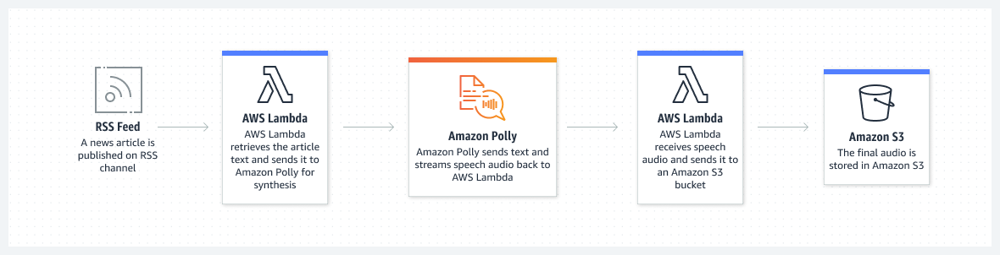
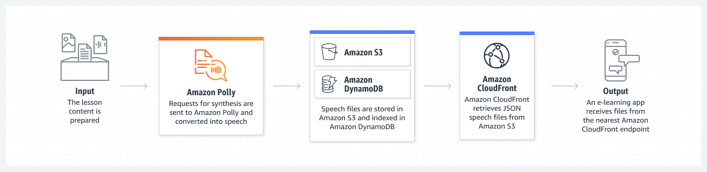

Beschreibung
Amazon Polly ist ein leistungsstarker Text-to-Speech (TTS)-Dienst von AWS, der fortschrittliche Deep-Learning-Technologien nutzt, um natürliche menschliche Sprache zu synthetisieren. Durch die Verwendung von Polly können Entwickler und Vermarkter sprachbasierte Anwendungen und Produkte erstellen, die Text in lebensechte Sprache umwandeln und so eine interaktive Benutzererfahrung bieten.
Mit Amazon Polly können Benutzer eine Vielzahl von Texten in gesprochene Sprache umwandeln, was zahlreiche Anwendungsfälle ermöglicht. Zum Beispiel können Unternehmen Polly nutzen, um interaktive Sprachassistenten, Audiobücher, Podcasts, E-Learning-Module und vieles mehr zu erstellen.
Ein herausragendes Merkmal von Amazon Polly ist seine Fähigkeit, natürliche Sprachausgabe in verschiedenen Stimmen und Sprachen zu generieren. Polly unterstützt eine Vielzahl von Sprachen und Dialekten, darunter Englisch, Deutsch, Französisch, Spanisch, Italienisch, Japanisch und viele weitere.
Darüber hinaus bietet Amazon Polly flexible Integrationsmöglichkeiten für Entwickler. Durch die Nutzung von APIs und SDKs können Entwickler Polly nahtlos in ihre Anwendungen integrieren und benutzerdefinierte Sprachausgabefunktionen implementieren. Dies ermöglicht es Entwicklern, maßgeschneiderte Lösungen zu erstellen, die den Anforderungen ihrer Anwendungen gerecht werden.
Amazon Polly zeichnet sich auch durch seine hohe Qualität und Flexibilität aus. Der Dienst bietet eine Reihe von Stimmen mit unterschiedlichen Stilen und Emotionen, sodass Entwickler die Sprachausgabe an die Bedürfnisse ihrer Anwendungen anpassen können. Zudem ermöglicht Polly die einfache Steuerung von Sprechgeschwindigkeit, Tonlage und Betonung, um eine noch authentischere Benutzererfahrung zu schaffen.
Amazon Polly ist eine äußerst nützliche Plattform für die Erstellung von sprachbasierten Anwendungen und Produkten, die die Benutzerinteraktion verbessern und neue Möglichkeiten für die Bereitstellung von Inhalten eröffnen.
* Amazon Polly: AWS Text-to-Speech (TTS)-Dienst
* Nutzt Deep-Learning für natürliche Sprachsynthese
* Text in gesprochene Sprache umwandeln
* Anwendungen: Sprachassistenten, Audiobücher, Podcasts, E-Learning
* Unterstützt verschiedene Sprachen und Dialekte
* Flexible Integration über APIs und SDKs
* Verschiedene Stimmen, Stile und Emotionen
* Einfache Steuerung von Sprechgeschwindigkeit und Tonlage
* Verbessert Benutzerinteraktion und Content-Bereitstellung
Schlüsselwörter
> > > Schlüsselworte bzw. Schlagworte sollen uns dabei helfen, einen Service leichter zu erkennen, wenn es um Prüfungsfragen geht. Ließ dir die Fragen richtig durch und achte auf folgende Schlüsselworte. Sie können dir bei der Beantwortung der Fragen helfen.
- Container-Orchestrierung: ECS ermöglicht daren von Docker-Containern in der AWS-Cloud.
- Container-Definitionen: Definition von Containber die Verwendung von Aufgaben (Tasks) und Services.
- Docker-Integration: ECS unterstützt Docker-Container und ermöng von Docker-Images.
- Task-Definitionen: Spezifikationen, wie eine Aufgabe (Task) in einvon Services, um langfristig laufende Anwendungetartet und Aufgaben ausgeführt werden.
- Auto Scaling: Automatische Anpassung der Anzahl von las basieinierbaren Metriken.
- Load Balancing: Integration mit dem Elastic Load Balancing-Dienst für die Lr.
- AWS Fargate: Option zur Ausführung von Containern ohne die Notwendigkeit, EC2.
- Integration mit Amazon ECR: Nahtlose Integration mit d
Grafische Erklärung
 Prüfung Fragen
- Welche der folgenden Aussagen beschreibt am besten die Funktionalität von AWS Polly?
- Ein Einhorn-Startup baut eine Analyseanwendung mit Unterstützung für eine sprachbasierte Schnittstelle. Die Anwendung wird sprachbasierte Eingaben von Benutzern akzeptieren und die Ergebnisse dann per Sprache übermitteln. Welche Lösung würden Sie als Cloud-Practitioner für den gegebenen Anwendungsfall empfehlen?
- Welche der folgenden AWS-Dienste kann in Kombination mit AWS Polly verwendet werden, um interaktive Sprachanwendungen zu erstellen?